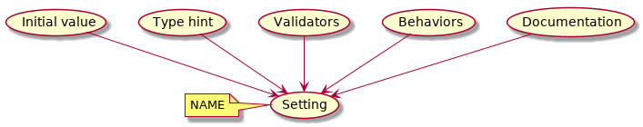

Advanced topics¶
In this chapter we explore Concrete Settings in depth.
Setting definition¶
Concrete Settings’ loves reader-friendly implicit settings definitions such as:
from concrete_settings import Settings
class AppSettings(Settings):
#: Turns debug mode on/off
DEBUG: bool = True
In this section we discuss how such an implicit definition
is parsed and processed into Setting
descriptor instances.
In a nutshell Concrete Settings has to get a setting field’s name, initial value and type hint, its validators, behaviors and documentation.

Name¶
Every attribute with name written in upper case is considered a potential Setting. The exceptions are attributes starting with underscore:
from concrete_settings import Settings
class AppSettings(Settings):
debug = True # not a setting
_DEBUG = True # not a setting
DEBUG = True ### considered a setting
Class methods are also automatically converted to property-settings even if their names are written in upper case.
from concrete_settings import Settings, setting
class AppSettings(Settings):
def ADMIN(self) -> str: # automatically converted to setting
"""Admin name"""
return 'Alex'
A method can be decorated by
@setting
in order to control Setting initialization.
For example, to set validators:
from concrete_settings import Settings, setting
from concrete_settings.exceptions import SettingsValidationError
# a validator
def not_too_fast(speed):
if speed > 100:
raise SettingsValidationError('You are going too fast!')
class CarSettings(Settings):
@setting(validators=(not_too_fast, ))
def MAX_SPEED(self):
return 200
Initial value¶
The initial value is the value assigned to the attribute:
class AppSettings(Settings):
DEBUG = True # initial value is `True`
MAX_SPEED = 10 # initial value is `10`
You can use the special Undefined
value in cases when initial value is not available:
from concrete_settings import Undefined
class DBSettings(Settings):
USERNAME: str = Undefined
PASSWORD: str = Undefined
Undefined implies that the setting value would be set later in runtime
before validation.
RequiredValidator
would fail validation if the setting’s value is Undefined.
It does not make much a sense to have a initial value for
a property-setting since the value is computed every
time a setting is read.
To prevent misuse, passing a value argument raises an AssertionError
when assert statements have effect.
from concrete_settings import Settings, setting
class AppSettings(Settings):
LOG_LEVEL = 'INFO'
def DEBUG(self) -> bool:
return self.LOG_LEVEL == 'DEBUG'
app_settings = AppSettings()
print(app_settings.DEBUG)
Output:
False
Type hint¶
A type hint is defined by a standard Python type annotation:
class AppSettings(Settings):
MAX_SPEED: int = 10 # type hint is `int`
If an attribute is not type-annotated, a type hint is computed
by calling type() on the initial value. The recognized types
are defined in
GuessSettingType.KNOWN_TYPES.
If the type is not recognized, the type hint is set to typing.Any.
class AppSettings(Settings):
DEBUG = True # initial value `True`, type `bool`
MAX_SPEED = 300 # initial value `300`, type `int`
It is recommended to explicitly annotate a setting with the intended type, in order to avoid invalid type detections:
class AppSettings(Settings):
DEBUG: bool = True # initial value `True`, type `bool`
MAX_SPEED: float = 300 # initial value `300`, type `float`
Property-settings’ type hint is read from the return type annotation.
If no annotation is provided, the type hint is set to typing.Any:
class AppSettings(Settings):
def DEBUG(self) -> bool:
return True
def MAX_SPEED(self):
return 300
print(AppSettings.DEBUG.type_hint)
print(AppSettings.MAX_SPEED.type_hint)
Output:
<class 'bool'>
typing.Any
The type_hint attribute is intended for validators.
For example, the built-in ValueTypeValidator fails validation if the type of the setting
value does not correspond to the defined type hint.
Validators¶
Validators is a collection of callables which validate the value of the setting.
The interface of the callable is defined in the Validator protocol.
If validation fails, a validator raises
SettingsValidationError
with failure details.
Individual Setting validators are supplied in validators argument of an explicit Setting definition.
Also some behaviors add certain validators to a setting.
The mandatory validators are applied to every Setting in Settings class.
They are defined
in Settings.mandatory_validators tuple.
The default validators are applied to a Setting that has no validators of its own.
They are defined in
Settings.default_validators.
ValueTypeValidator is
the only validator in the base Settings.default_validators.
Note that both lists are inherited by standard Python class inheritance rules.
For example, to extend default_validators in a derived class, use
concatenation. In the following example
RequiredValidator
is added to default_validators to prevent any
Undefined values appearing
in the validated settings:
from concrete_settings import Settings, Undefined
from concrete_settings.validators import RequiredValidator
class AppSettings(Settings):
default_validators = Settings.default_validators + (RequiredValidator(), )
ADMIN_NAME: str = Undefined
app_settings = AppSettings()
print(app_settings.is_valid())
print(app_settings.errors)
Output:
False
{'ADMIN_NAME': ['Setting `ADMIN_NAME` is required to have a value. Current value is `Undefined`']}
Property-settings are validated in the same fashion:
from concrete_settings import Settings, setting
class AppSettings(Settings):
@setting
def ADMIN_NAME(self) -> str:
return 10
app_settings = AppSettings()
print(app_settings.is_valid())
print(app_settings.errors)
Output:
False
{'ADMIN_NAME': ["Expected value of type `<class 'str'>` got value of type `<class 'int'>`"]}
Behaviors¶
Setting Behaviors
allow executing some logic on different stages of a Setting lifecycle.
In addition to defining behaviors in a Setting
constructor,
Concrete Settings utilizes matrix multiplication
@ (object.__rmatmul__()) operator to add a behavior to a Setting.
Let’s define the ADMIN_NAME setting from the
example above as required:
from concrete_settings import Settings, Undefined
from concrete_settings.contrib.behaviors import required
class AppSettings(Settings):
ADMIN_NAME: str = Undefined @required
The equivalent explicit form is:
from concrete_settings import Setting, Settings, Undefined
from concrete_settings.contrib.behaviors import required
class AppSettings(Settings):
ADMIN_NAME: str = Setting(Undefined, behaviors=(required, ))
Multiple behaviors can be chained via @ operator:
from concrete_settings import Settings, Undefined
from concrete_settings.contrib.behaviors import required, deprecated
class AppSettings(Settings):
ADMIN_NAME: str = Undefined @required @deprecated
Behaviors can also decorate property-settings:
from concrete_settings import Settings, Undefined, setting
from concrete_settings.contrib.behaviors import required
class AppSettings(Settings):
@required
@setting
def ADMIN_NAME(self) -> str:
return Undefined
Validating the example above
app_settings = AppSettings()
print(app_settings.is_valid())
print(app_settings.errors)
yields the following output:
False
{'ADMIN_NAME': ['Setting `ADMIN_NAME` is required to have a value. Current value is `Undefined`']}
Documentation¶
Last but not the least - documentation. No matter how well you name a setting, its purpose, usage and background should be carefully documented. One way to keep the documentation up-to-date is to do it in the code.
Concrete Settings uses Sphinx
to extract settings’ docstrings from a source code.
A docstring is written above the setting definition
in a #: comment block:
# test.py
from concrete_settings import Settings
class AppSettings(Settings):
#: This is a multiline
#: docstring explaining what
#: ADMIN_NAME is and how to use it.
ADMIN_NAME: str = 'Alex'
print(AppSettings.ADMIN_NAME.__doc__)
Output:
This is a multiline
docstring explaining what
ADMIN_NAME is and how to use it.
Note that extracting a docstring works only if the settings are located in a readable file with source code!
Otherwise documentation has to be specified as an argument in Setting
constructor:
from concrete_settings import Settings
class AppSettings(Settings):
ADMIN_NAME: str = Setting(
'Alex',
doc='This is a multiline\n'
'docstring explaining what\n'
'ADMIN_NAME is and how to use it.'
)
Property-settings are documented via standard Python function docstrings:
# test.py
from concrete_settings import Settings, setting
class AppSettings(Settings):
def ADMIN_NAME(self) -> str:
'''This documents ADMIN_NAME.'''
return 'Alex'
print(AppSettings.ADMIN_NAME.__doc__)
Output:
This documents ADMIN_NAME.
Update strategies¶
In most cases, a developer wants to overwrite a setting value when updating it from a source. But there are exceptions. Think of a list setting, which contains administrators’ emails, e.g.:
from typing import List
from concrete_settings import Settings
class AppSettings(Settings):
ADMIN_EMAILS: List[str] = [
'admin@example.com'
]
What if you want to append the emails defined in sources, instead
of overwriting them? ConcreteSettings provides a concept of
update strategies
for such cases:
{
"ADMIN_EMAILS": ["alex@my-super-app.io"]
}
from concrete_settings.sources import strategies
...
app_settings = AppSettings()
app_settings.update('/tmp/cs-quickstart-settings.json', strategies={
'ADMIN_EMAILS': strategies.append
})
print(app_settings.ADMIN_EMAILS)
Output:
['admin@example.com', 'alex@my-super-app.io']